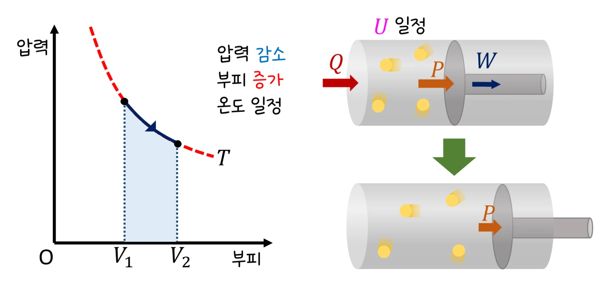
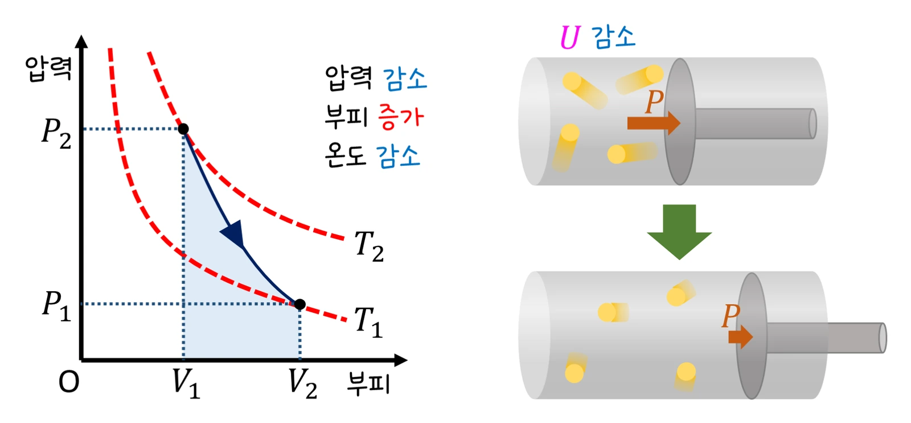

대학 일반물리 실험 1 · 15주차 · 열역학 제1법칙
실험에서 1 mol 이상 기체(300 K, 100 kPa, 24.9 L)를 등온·단열·정압 과정으로 부피 비 V₂/V₁(0.5~2.0)만큼 바꾸며 기체 종류(단원자·이원자)를 바꿔 W, ΔU, Q, 끝 압력을 기록했습니다. 두 배로 팽창할 때 등온은 W = Q = 1729 J, 단원자 단열은 W = −ΔU = 1384 J(189 K로 냉각), 1.5배 정압은 W 1247 J에 Q 3118 J이었고 모든 기록에서 Q − (ΔU + W) = 0이었습니다. 열역학 제1법칙, 세 과정, 엔트로피를 정리합니다.
실험 데이터 되짚기
실험 안내: 과정 버튼(등온·단열·정압), 기체 버튼(단원자 He·이원자 N₂), 부피 비 V₂/V₁ 슬라이더(0.5~2.0, 1보다 작으면 압축)를 정하고 과정 진행을 누르면 과정·기체·V₂/V₁·W·ΔU·Q·P₂가 자동 기록됩니다. 등온 과정에서 부피 비를 여러 개, 단열 과정도 몇 개 기록해 4개 이상이 되면 ✅ 데이터 검증 탭에 등온 W − ln(V₂/V₁) 그래프(기울기로 R 역산)와 단열 ln(P₂/P₁) − ln(V₂/V₁) 그래프(기울기 −γ)가 나옵니다.
| 과정 | 기체 | V₂/V₁ | W (J) | ΔU (J) | Q (J) | P₂ (kPa) |
|---|---|---|---|---|---|---|
| 등온 | 단원자 | 2.0 | +1729 | 0 | +1729 | 50.0 |
| 등온 | 단원자 | 0.5 | −1729 | 0 | −1729 | 200.0 |
| 단열 | 단원자 | 2.0 | +1384 | −1384 | 0 | 31.5 |
| 단열 | 이원자 | 2.0 | +1510 | −1510 | 0 | 37.9 |
| 정압 | 단원자 | 1.5 | +1247 | +1871 | +3118 | 100.0 |
| 정압 | 이원자 | 1.5 | +1247 | +3118 | +4365 | 100.0 |
같은 2배 팽창이라도 등온은 받은 열을 모두 일로(ΔU = 0), 단열은 열 없이 내부 에너지를 깎아 일을 하므로 기체가 식고(단원자 189 K) 압력이 더 크게 떨어집니다(31.5 kPa < 50.0 kPa). 정압 가열은 일(PΔV = 1247 J)과 함께 내부 에너지도 올려야 해서 Q가 가장 크고, CV가 큰 이원자 기체는 열이 더 필요합니다.
Q = ΔU + W, W = ∫P dV, 이상 기체 ΔU = nCVΔT (단원자 CV = 3R/2, 이원자 5R/2).
교재 그림
등온 팽창 — 받은 열이 모두 일로

온도가 그대로라 ΔU = 0이고, 받은 열 Q가 모두 기체가 한 일 W(그래프 아래 넓이)로 나갑니다.
교재 그림
단열 팽창 — 내부 에너지를 써서 일한다

열을 받지 않으니(Q = 0) 기체가 한 일만큼 내부 에너지가 줄어 T₂의 등온선에서 T₁의 등온선으로 내려옵니다. 팽창하면 식는 까닭이에요.
움직여 보기
등온·단열·정압 — P–V 그래프 아래 넓이가 일
보라 넓이가 기체가 한 일 W입니다. 같은 2배 팽창이라도 단열 곡선은 등온선보다 아래로 떨어져(기체가 식음) 넓이가 작고, 정압은 가장 큽니다. 주황 화살표는 열의 출입, 실린더 색은 온도(파랑 = 차가움, 빨강 = 뜨거움)입니다. 표 1의 값과 비교해 보세요. (n = 1 mol, 처음 300 K·100 kPa, 준정적 과정)
단원자 기체 분자의 평균 운동 에너지 = (3/2)kT → 온도는 분자 운동의 척도입니다. 제2법칙: 고립계 엔트로피는 줄지 않으며, 기체의 ΔS = nCVln(T₂/T₁) + nR ln(V₂/V₁) (가역 단열은 0).
x ↔ θ, v ↔ ω, m ↔ I, F ↔ τ, p ↔ L, ½mv² ↔ ½Iω². 보존 법칙(에너지·운동량·각운동량)은 각각 외부 일·외력·외부 돌림힘이 0일 때 성립합니다.
· 과정은 모두 준정적(천천히) 가역 과정으로 가정했습니다. R = 8.314 J/(mol·K).
· 실제 기체는 고압·저온에서 이상 기체에서 벗어납니다.
R = 8.314 J/(mol·K), n = 1 mol, V₁ = 24.94 L · nRT = 2494 J · γ: 단원자 1.667, 이원자 1.400
W = nRT ln 1.5 = 8.314 × 300 × 0.4055 ≈ 1011 J. 등온이라 ΔU = 0 → Q = W = 1011 J. ΔS = R ln 1.5 ≈ 3.37 J/K.
TVγ−1 일정, γ − 1 = 2/3 → T₂ = 300 × 2−2/3 ≈ 189.0 K. Q = 0이므로 W = −ΔU = (3/2) × 8.314 × (300 − 189.0) ≈ 1384 J. 가역 단열이므로 ΔS = 0입니다.